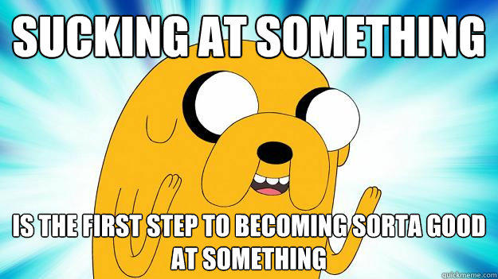
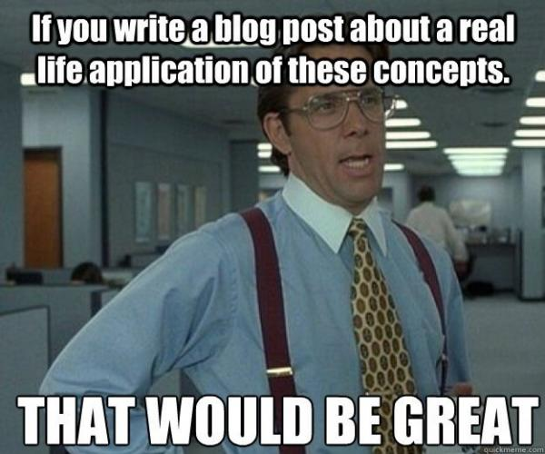
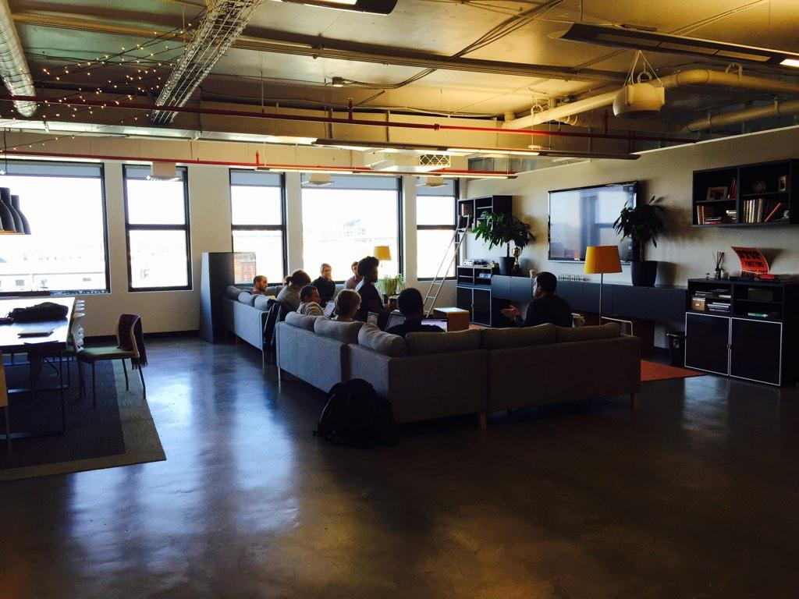

Getting Comfortable Being Uncomfortable
Lessons Learned One Year After
the Nashville Software School
Created by Aimee Knight / @Aimee_Knight
- Demand for software engineers expected to grow by 33% from 2012 - 2022
- Currently, there are three open jobs per developer
- Number of US programming schools: 43
- 2,000 students graduated from a bootcamp in 2013
- 6,000 students graduated from a bootcamp in 2014
- 16,000 students estimated to graduate from a bootcamp in 2015
How do we effectively funnel incoming developers to address this problem?
My Story
• Marketing
• Expression Engine & Wordpress
• Ruby on Rails
• 2nd Degree
• Nashville Software School
JavaScript
Lessons Learned For Junior Developers
• What programming language should you pick?
• How do you find a mentor?
• Can you study programming for 10 weeks and make six figures?
Nope!
#1 Question: Breaking In!
Employers probably aren’t hiring you expecting you to solve their most complex problems.
If you're not making mistakes, then you're not doing anything. I'm positive that a doer makes mistakes. - John Wooden
Something to keep in mind
Dont be this guy!
Hard work beats talent!
You've got lots to prove, and people will be betting on you!
Hard work beats talent!
Job Requirement: Desire to be a lifelong learner
All jobs are not created equal!
• Code Reviews
• Mentorship
• Testing
Seeing the code base for the first time!

Hard work with practical approaches
Bootcamps = 20% - 80%

Hard work with practical approaches
Getting up to speed
• Start with tests
• Break stuff
Hard work with practical approaches
• The boy scout rule
Moving past tutorials
Working Hard
+
Working Smart
Practice makes permanent
Reflect and retrace your steps often.
One thing at a time
Languages, libraries & frameworks are just tools. What's popular today probably won't be ten years from now.
Mental Awareness & Taking Care of Yourself
Stop calling yourself dumb!
Self talk is the time to "fake it till you make it"!
You'd better grow some thick skin
Brutaly honest feedback is how you get better!
When you don’t know how to do something, or you come across a tough bug remind yourself...
Every time something goes wrong in your program, you have an opportunity to learn something new!
Pair Up!
• Peer Learning
• Working with a mentor
Baltimore Junior Developer Meetup
Mentoring
Developers who received mentoring were promoted five times more often than those who didn’t.
#1 Lesson Learned
It's not going to be easy!
Already have this stuff down?
Here’s what you can do to help
Suppress these feelings!

Preparing yourself and the team
Imagine... you're adopting a dog
Preparing yourself and the team
• Establishing a culture of communication
• Pay attention to non-verbal cues
Learn to empathize and sincerely listen
Preparing yourself and the team
• Frame conversations accordingly
Preparing yourself and the team
• Project management
¯\_(ツ)_/¯
Preparing your code base
• Testing
Defect percentages decreased 40% - 90% when compared to products not developed with TDD.
5% - 35% increase in initial development time.
Preparing your code base
- Linting: Cyclomatic Complexity
- Style Guide: JSCS
- Comments
Practical approaches to collaborating productively
• Code Reviews
Practical approaches to collaborating productively
• Code Reviews
"Tell me and I forget. Teach me and I remember. Involve me and I learn." - Benjamin Franklin
Practical approaches to collaborating productively
• Pair Programming
Pro Tip:
Junior's can boost your career!
Burnout
Using a junior to boost your career
Mentors are six times more likely to be promoted
and 20% more likely to get a raise.
Above all...
Be Nice!
Uncomfortable?
You're in good company!
- Walt Disney: Fired from his job at a newspaper because, “he lacked imagination, and had no good ideas.”
- Oprah Winfrey: Fired from her job as a television reporter because she was “unfit for tv.”
- Thomas Edison: Growing up was told he was “too stupid to learn anything.”
- Jerry Seinfeld: First time he walked on stage at a comedy club, he froze and was booed off.
- JK Rowling: "Harry Potter and the Philosopher’s Stone" was rejected by the first 12 publishers it was submitted to.
- Michael Jordan: Cut from his high school basketball team.
Thank you!
- http://www.usnews.com/opinion/articles/2014/09/15/the-stem-worker-shortage-is-real
- http://www.bls.gov/ooh/Computer-and-Information-Technology/Software-developers.htm#tab-1
- http://venturebeat.com/2014/05/03/coding-bootcamps-will-graduate-6000-people-in-2014-3x-as-many-as-last-year/
- http://research.microsoft.com/en-us/groups/ese/nagappan_tdd.pdf
- http://www.forbes.com/sites/lisaquast/2011/10/31/how-becoming-a-mentor-can-boost-your-career/